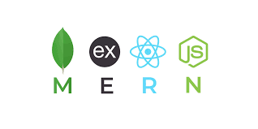

Introduction to MERN Stack
The MERN stack is a popular web development stack that consists of four main technologies:
- MongoDB: A NoSQL database that stores data in flexible, JSON-like documents.
- Express.js: A web application framework for Node.js that simplifies the process of building server-side applications.
- React: A JavaScript library for building user interfaces, particularly single-page applications.
- Node.js: A JavaScript runtime built on Chrome's V8 engine that allows developers to run JavaScript on the server side.

🔗 Learn more about the MERN stack